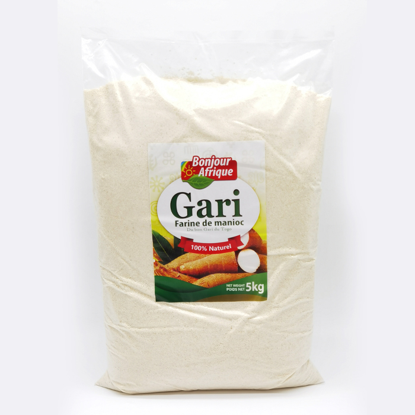

Les jeunes d'aujourd'hui rencontrent de nombreux défis. Souvent, ceux qui réussissent financièrement proviennent de familles aisées, laissant une grande partie des jeunes en quête d'opportunités viables pour améliorer leur condition. Cependant, il existe une voie prometteuse : la vente de gari.
Le gari, un aliment de base en Afrique de l'Ouest, est une farine de manioc fermentée et granulée. Il est largement apprécié pour sa polyvalence et sa valeur nutritive. Investir dans ce commerce représente une opportunité exceptionnelle pour les jeunes entrepreneurs togolais. Avec des techniques de production modernes et une distribution efficace, le marché du gari peut répondre aux besoins alimentaires tout en stimulant l'économie locale. En se concentrant sur la qualité et l'innovation, ce business de vente de gari peut prospérer et contribuer de manière significative au développement durable de la région.

Le Business
Dans un monde où les opportunités économiques semblent souvent réservées à une élite, les jeunes entrepreneurs togolais cherchent des moyens innovants pour se démarquer et créer leur propre succès. La formation que nous proposons sur le business de vente de gari offre une voie accessible et prometteuse pour atteindre cet objectif. Le gari, un aliment de base en Afrique de l'Ouest, présente non seulement un potentiel de marché considérable, mais aussi une chance de contribuer de manière significative à l'économie locale. Rejoignez-nous pour découvrir comment transformer cette opportunité en un business florissant capable de générer 1 million de francs CFA en seulement six mois.
Voici un plan d'affaires détaillé pour la vente de gari au Togo avec l'objectif de générer 1 million de francs CFA en 6 mois :
Plan d'Affaires pour la Vente de Gari au Togo
Analyse de Marché
Étude de la Demande : Évaluer la demande actuelle de gari dans les marchés locaux et internationaux. Identifier les segments de marché les plus prometteurs.
Analyse de la Concurrence : Étudier les concurrents existants, leurs forces et faiblesses. Identifier des opportunités pour se différencier.
Production
Achat de Matières Premières : S'approvisionner en manioc de haute qualité auprès de fournisseurs locaux.
Transformation : Investir dans des équipements modernes pour la transformation du manioc en gari de haute qualité.
Contrôle de Qualité : Mettre en place des procédures strictes pour garantir la qualité du produit final.
Marketing et Vente
Stratégie de Prix : Fixer des prix compétitifs tout en assurant une marge bénéficiaire.
Promotion : Utiliser les réseaux sociaux, les affiches et les foires locales pour promouvoir le produit.
Distribution : Établir des partenariats avec des distributeurs locaux et des supermarchés. Utiliser des plateformes en ligne pour atteindre un public plus large.
Gestion Financière
Budget Initial : Prévoir un budget pour l'achat de matières premières, les équipements, les salaires, et les coûts de marketing.
Prévisions de Ventes : Estimer les ventes mensuelles nécessaires pour atteindre l'objectif de 1 million de francs CFA en 6 mois.
Gestion des Coûts : Surveiller les coûts de production et ajuster les dépenses en conséquence.
Objectifs et Mesures de Performance
Objectifs à Court Terme : Atteindre des ventes mensuelles croissantes. Améliorer la notoriété de la marque.
Objectifs à Long Terme : Élargir la gamme de produits, explorer de nouveaux marchés.
Formation pour les Entrepreneurs
Formation sur la Transformation du Manioc : Former les jeunes entrepreneurs aux techniques de transformation du manioc en gari.
Formation en Gestion d'Entreprise : Offrir des formations sur la gestion financière, le marketing, et la stratégie d'affaires.
Mentorat et Soutien : Mettre en place un programme de mentorat pour accompagner les entrepreneurs dans leur parcours.
Conclusion
En suivant ce plan d'affaires structuré et en restant concentré sur la qualité et l'innovation, les jeunes entrepreneurs togolais peuvent non seulement générer un revenu significatif, mais aussi contribuer au développement économique durable de la région.